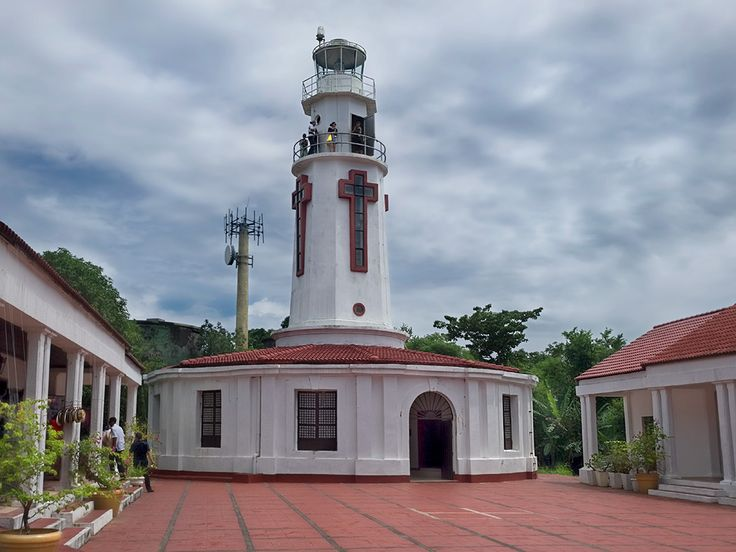
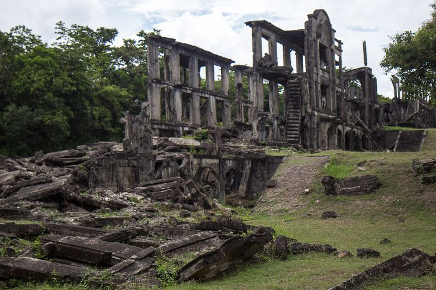

Corregidor Island
Corregidor Island, located at the entrance of Manila Bay, is a historically significant site in the Philippines. Known as the "Rock," it played a crucial role during World War II as a strategic military outpost. The island was heavily fortified by the United States to defend the Philippines against Japanese invasion. In 1942, after fierce fighting, Corregidor fell to Japanese forces, but it became a symbol of resilience and sacrifice, especially during the Battle of Corregidor.

Corregidor Island
Today, Corregidor Island is a popular tourist destination, offering visitors a chance to explore its wartime relics, including tunnels, batteries, and memorials.

Corregidor Island
The island is home to the famous Malinta Tunnel, which was used as a bomb shelter and hospital during the war.

Corregidor Island
With its stunning views, rich history, and preserved monuments, Corregidor Island serves as a poignant reminder of the bravery and sacrifices made during one of the darkest periods in Philippine history.